There are many sides
Web of Linked Data?
We are loosing thousands of Alexandria libraries each day
We have lost so much of the early Web history, just as we have lost so much of early Human history.
Kalev H. Leetaru - University of Illinois
The forces of decay
Link Rot
Illustration by the Project Twins
Content Drift
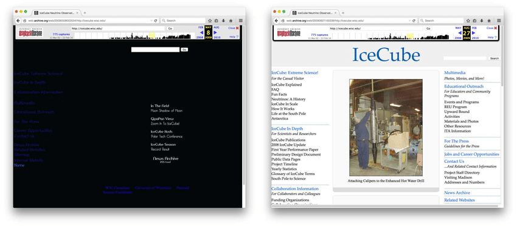
Significant change in content within a 3-Month Period
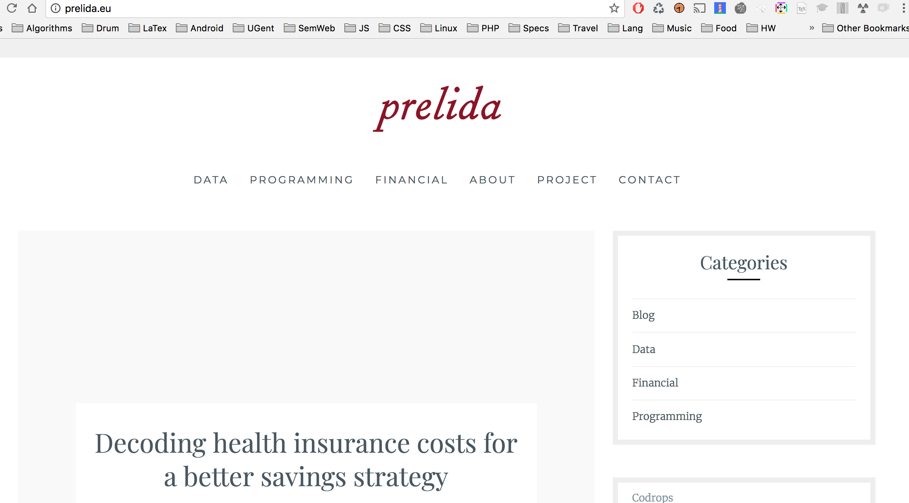
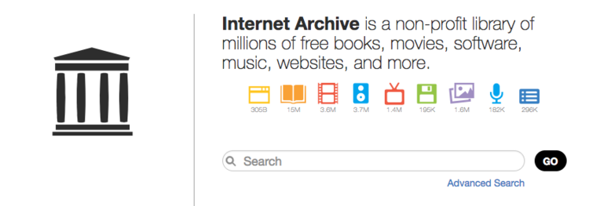
Strategies
Observational: perceived as discrete
Historical: perceived as continuous
Versioning systems
Transactional
Notification-based
Snapshot
Web archive
See: Open Wayback
Versioning systems
See: MediaWiki
Transactional
See: SiteStory apache plugin
If a representation
Notification-based
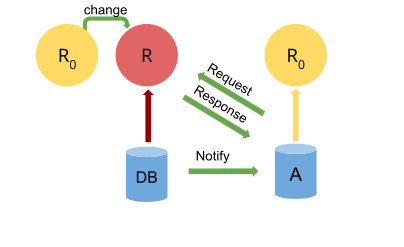
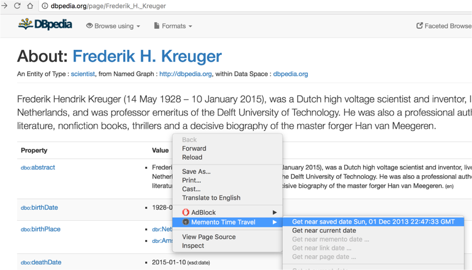
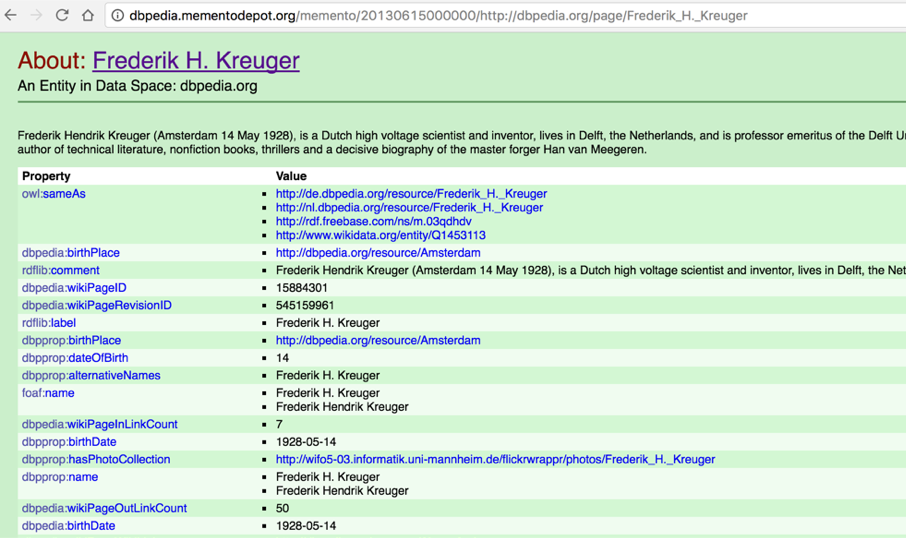
Archive or Archiving ?
Linked Data archiving as the product
RDF indexes for versioning
Dydra, Virtuoso, XRDF3X, ...
Representations of versions, provenance & time:
Technical
Linked Data archiving as the process
Some technological building blocks
Linked Data interfaces, change detection, publishing, crawling & querying
Technical, as well as Infrastructural & Societal.
What assumptions are there about data evolution?
Historical Data
Provenance is a timeline.
Only truth can exist at the same time.
Timeseries databases, Wikipedia
Versioned Data
Provenance is a directed acyclic graph.
Multiple truths can exist at the same time.
Decay becomes more complex
Link Rot
Content Drift
Concept Drift
"Please don't change your vocabulary"
Problem in other domains as well (Machine Learning)
Study these issues within Linked Data
Link Rot
Subject or Object cannot be dereferenced
Dataset/Interface is gone
Content Drift
Context graph of Subject or Object has changed
Concept Drift
Predicate or Object change meaning
Archiving for the Reproducibility of Query results
Sustain the validity of claims
Backwards compatibility of applications
Federated querying is highly affected
How to shape a decentralized Quality of Service?
The Hyperlink is the simplest form of decentralization,
Persistent Identification
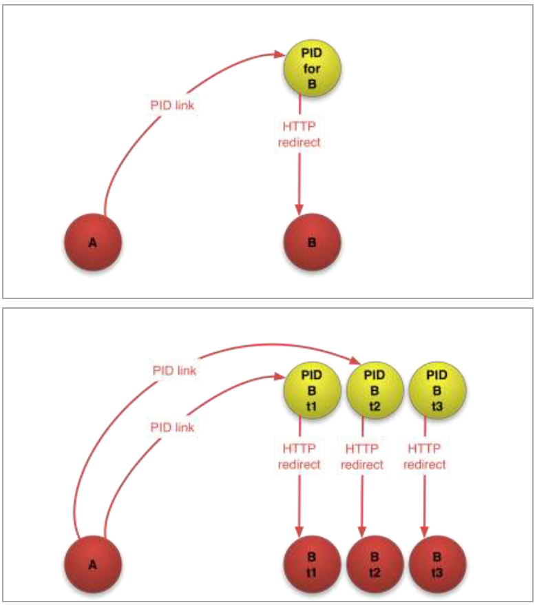
Figure by Herbert Van de Sompel
Persistent Identification
Dependency on publisher registering the PIDs
Possible loss of connection between PIDs and the original
Dependency on the PID provider
Possibly replacing one potential Link rot problem by another
Who are you to tell me my URI is not persistent?
ISWC Resources track:
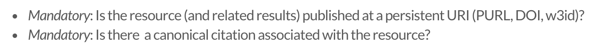
Consensus on and trust in persistence in a decentralized Web:
Open challenges with Memento
Real-time data
HTTP Datetime format is per second
Parallel truths
No solution for accessing Versioned Data
Who will be responsible for archiving?
Publisher
Snapshot
Versioning systems
3rd party
Hybrid: Publisher and/or 3rd party
Transactional
Notification-based
Snapshot
Often "End of Term" archive (DBPedia version)
Exchangeable archives, eg. file-based HDT
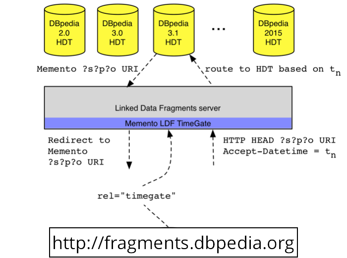
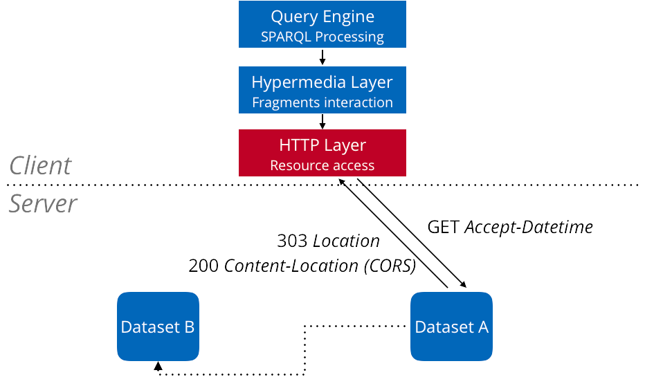
Versioning systems
Memento support can improvedepends on query expressivity
Significant progress in the RDF domain
Web
MediaWiki
RDF
Storage: Dydra, Virtuoso, ...
Memento-supported publishing: DBpedia Wayback machine, Linked Data Fragments Server
Hybrid: Snapshot + Versioning
Discrete snapshots + index for continuous versions
Linked Data pages
Tailr , ...Triple Patterns
Ostrich (offset-enabled) , ...
Web archive
Not much in place yet
Indexes, but no notion of time
Many technologiestargeted crawling, sindice LODLaundromat, Linked Data Crawling, ...
No guarantees on completeness
Transactional
Decentralized, sustainable solution
A challenge for completeness
Dependence on resource granularity
Interested to see how far we would get...
Notification-based
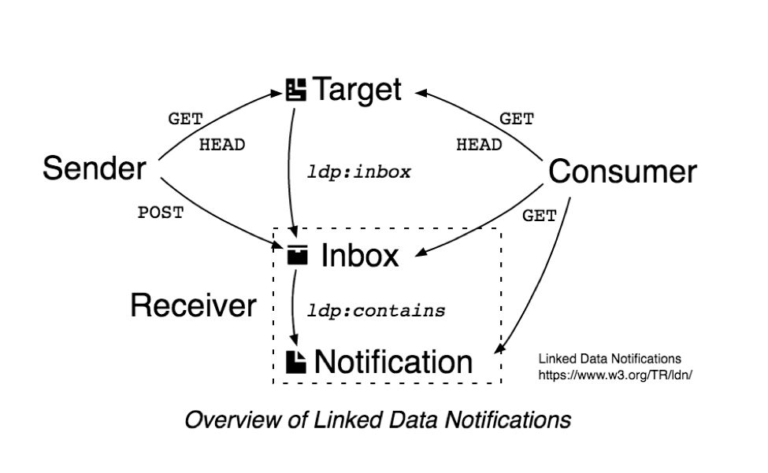
Data archiving intrests more than curators & activists
For instance, Data driven journalism.
Product: transparency of the editorial process
Process: interaction with users, public
Scolary communication, cultural heritage, legal publications, community databases (Wikipedia & Wikidata)
Archivability of Linked Data
Linked Data is in essence easier to archive.
Raw, self-contained data
Already machine processable/understandable
No obfuscation by client-side scripting
Accessibility of content to stimulate archiving.
The content in HTML+RDFa that dokieli produces is accessible (readable) without requiring any CSS or
JavaScript, ie. text-browser safe . Breaking this "rule" in future development should be
considered an anti-pattern (or a bug) in dokieli.
dokieli documentation , Sarven Capadisli
Choices in Linked Data interfaceincrease or decrease archiving.
Intelligent Server High resource granularity
Intelligent Client Data not as accessible Need to participate in archiving process
Prevent mistakes from the past in standardization
Query interfaces: what can be archived?Protocols: is it accessible?Domain Modeling: can the semantics be preserved? How to select the subgraph?
There are many sides
We don't start from scratch,
Start covering the uncovered sides.
Add archiving to the discussion.